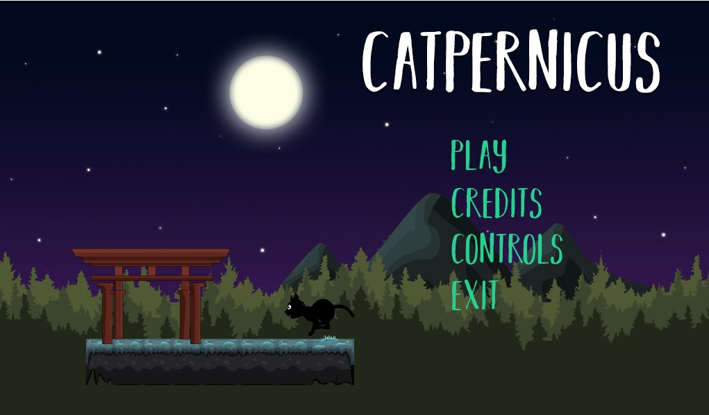

+++ # Project title. title = “Catpernicus [Alpha]”
date = 2019-11-25T00:00:00
summary = “A platformer game with touches of stealth mode, made in Godot Engine, as the final project for one of my courses. Play as a cat with a mission, and don’t spend your nine lives for it, or it is game over!”
external_link = ""
slides = "example-slides" referencescontent/slides/example-slides.md.slides = "".slides = ""
url_pdf = "" url_slides = "" url_video = "" url_code = ""
featured.jpg/png to your project’s folder.[image] # Caption (optional) caption = ""
# Focal point (optional) # Options: Smart, Center, TopLeft, Top, TopRight, Left, Right, BottomLeft, Bottom, BottomRight focal_point = ""
preview_only = true
[{...}, {...}, {...}][[url_custom]]
name = “Download [Win]”
url = ""
+++
This prototype game was developed as a final assignment for one the courses I undertook, namely “Developing Videogames III”. Catpernicus is a platformer game, with a little story: you play as a cat that needs to arrive to a secured place to deliver something. It has some touches of a stealth game, as you need to avoid enemies no matter what, as the cat (Catpernicus!) cannot attack or kill the monsters. But this isn’t strictly a stealth game, because only two types of enemies can “see” and attach the player, and one of them just “hears” it (sprinting is noise, btw).

The aim of this game is to try to get back to those old platformers in which you learn by repetition. But I decided to add those touches of stealth games to have a little distinction. Also, as you play as a cat, you have only nine (9!) lives to spend, and you can’t recover them: loosing all 9 lives means a perma-death, and you start over from the beginning.
This game was developed entirely with Godot 3.1, and was my first big experience with that engine. I found it to be a great tool, with some strengths and weaknesses of course, but full of possibilities.
Here is a trailer featuring a short in-game footage:
The game is available for download. However, this game is in alpha state: it has some bugs that are not addressed yet. To run the game you will require to have Visual C++ Redistributable installed on your computer.
I developed this game in Godot Engine. The trailer was recorded using OBS Studio and edited in Photoshop CS6 and Sony Movie Studio.
The following resources were used, as they appear in the game’s credits: